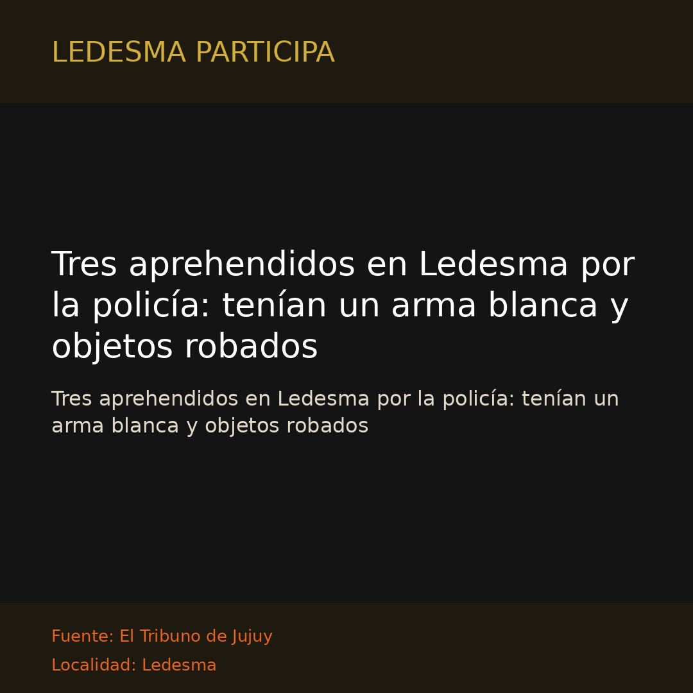
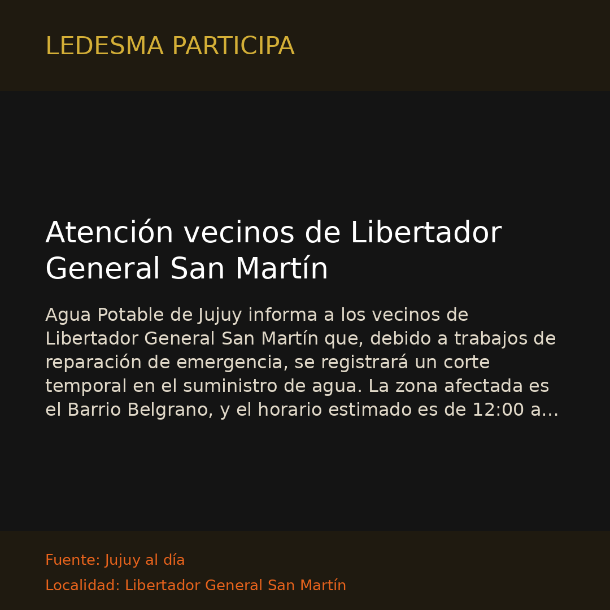

Libertador Gral. San Martín
Libertador Gral. San MartínEn distintos procedimientos, demoraron a tres malvivientes en Libertador
Los protagonistas fueron sorprendidos en actitud delictiva y transportando objetos robados
Libertador Gral. San MartínLos protagonistas fueron sorprendidos en actitud delictiva y transportando objetos robados
 Libertador Gral. San Martín
Libertador Gral. San MartínEl padre Rene Ruiz, párroco de la Sagrado Corazón de Libertador, analizó el perfil del nuevo Sumo Pontífice, habló de la colecta nacional por su visita al país y del intenso calendario de…
 Libertador Gral. San Martín
Libertador Gral. San MartínSecuestran una tumbera, un cuchillo y celulares robados tras un violento asalto en Libertador

Departamento LedesmaTres aprehendidos en Ledesma por la policía: tenían un arma blanca y objetos robados
 Jujuy
JujuyJujuy se encuentra entre las provincias con mayor retroceso en la facturación de supermercados del país. Durante el primer semestre de 2026, las ventas se ubicaron 22,1% por debajo del promedio…
 Jujuy
JujuyLa intervención policial fue posibilitada por la denuncia de vecinos y permitió incautar pasta base, cocaína, dinero y elementos de fraccionamiento en San Pedrito, en Jujuy.
 Jujuy
JujuyUn equipo de entomólogos liderado por la bióloga María Cecilia Martínez descubrió dos nuevas especies de chinches en Jujuy y Salta en un estudio publicado en Neotropical Entomology. El grupo…
 Jujuy
JujuyMuy probablemente, el paso del tiempo irá confirmando dos cosas: lo histórico del mandato del presidente Javier Milei y, al mismo tiempo, sus limitaciones o su techo. En lo histórico, podrá ser visto…
 Jujuy
JujuyLa última encuesta realizada por Jujuy al día reveló que el pesimismo sobre el futuro económico saltó 7 puntos en el último mes. La desocupación se consolida como la principal preocupación de las…
 Jujuy
JujuyEl infectólogo Gustavo Echeñique habló sobre lo qué está pasando con la denominada supergripe, cuáles son sus síntomas y cómo se encuentra Jujuy.
Prensa Jujuy (Gobierno de Jujuy) informó lo siguiente: “La inscripción permanece abierta hasta el lunes 31 de agosto para la capacitación que impulsa el turismo activo y la seguridad de los guías en…

Libertador Gral. San MartínAgua Potable de Jujuy informa a los vecinos de Libertador General San Martín que, debido a trabajos de reparación de emergencia, se registrará un corte temporal en el suministro de agua. La zona…
 Libertador Gral. San Martín
Libertador Gral. San MartínSecuestraron más de 43 kilos de marihuana y 4.200 atados de cigarrillos en Libertador
Buen día. En Libertador General San Martín, la temperatura actual es de 14.2°C (nublado). Para hoy se espera una mínima de 14.2°C, una máxima de 21.1°C y una probabilidad de lluvia de 26%…
 Jujuy
JujuyLa mejor manera de empantanar un debate consiste en no plantear de manera precisa los términos utilizados. En clase, le pregunté a mis alumnos: ¿Depende la política de la economía, o la economía de…
 Jujuy
JujuyJujuy al día ® – La Dirección Provincial de Estadística y Censos dio a conocer los valores de la Canasta de Crianza correspondientes a julio de 2026. Al igual que ocurrió en los meses anteriores, los…
 Jujuy
JujuyLos datos oficiales del Indec muestran una fuerte disparidad entre rubros. Algunos lograron mejoras de dos dígitos, mientras que otros se achicaron en relación al 2025 Jujuy al día ® – La actividad…
 Jujuy
JujuyEl financiamiento, obtenido mediante dos préstamos sin garantía real, se suma a la reciente aprobación del RIGI para la segunda etapa del proyecto, que prevé incorporar 45.000 toneladas anuales de…
 Jujuy
JujuyEn distintas ciudades de Santa Cruz y Tierra del Fuego, comunidades de residentes jujeños mantuvieron viva la memoria de la gesta del 23 de agosto con vigilias, actos, expresiones culturales y una…
Ledesma Participa es la página que te informa sobre Libertador General San Martín y el Departamento Ledesma: noticias locales, servicios, comunidad e información útil. Sitio web…
 Jujuy
JujuyDos delincuentes sorprendieron a una pareja que se encontraba en una zona de malezas detrás de un supermercado de la zona sur de San Salvador de Jujuy y, bajo amenazas, le robaron una motocicleta y…
 Jujuy
JujuyJujuy al día ® – Dando continuididad a la Ley Micaela, finalizó la formación destinada a cadetes del Instituto Universitario Provincial de Seguridad, IUPS. En el marco de la Ley N° 27.499, se…
 Jujuy
JujuyLos Pumas recorrieron Purmamarca y disfrutaron de algunos de sus paisajes más emblemáticos, en la previa del esperado partido frente a Australia en Jujuy.
 Jujuy
JujuyJujuy al día ® – Dos delincuentes que circulaban en una motocicleta sorprendieron a la víctima mientras esperaba a la vera de la RN 9 y le arrebataron el teléfono celular. Ocurrió durante la mañana…
 Jujuy
JujuyEn el marco del acompañamiento a la transformación de las Escuelas Secundarias de Arte: orientadas, especializadas y artístico-técnicas, la Modalidad de Educación Artística acompañó la participación…
 Jujuy
JujuyJujuy al día ® – Las áreas del Ministerio de Infraestructura profundizan conocimiento y planificación ante eventuales incidencias de El Niño. Las probabilidades para Jujuy. Autoridades del Ministerio…
 Libertador Gral. San Martín
Libertador Gral. San MartínJujuy al día ® – Les informamos que, con el objetivo de elevar la calidad del servicio eléctrico, se llevarán adelante tareas programadas de mantenimiento y mejora en el sistema de distribución…